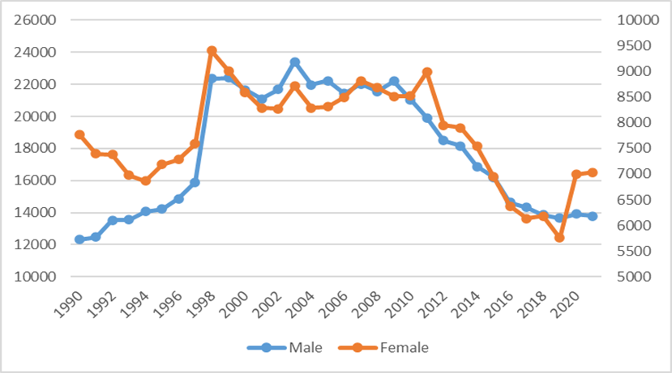
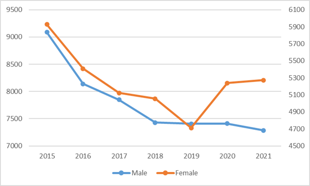
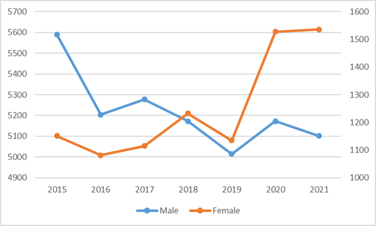

Suicide cases and COVID-19 pandemic
08/05 2022
Author: Ayako Wakano
The economic crisis greatly affects the number of suicide cases in Japan. Figure 1 below shows the drastic increase from 1997 to 1998. The left y axis shows the number for male and the right shows that of female. Since the burst of the bubble economy in 1991, Japan had experienced the severe recession for long time. In 1997, it is the year that Yamaichi Securities Co., Ltd. collapsed and in 1998 the Long-Term Credit Bank of Japan failed. The difference of suicide cases in one year from 1997 to 1998 became approximately 8,200. The increase ratio in 1998 is 35 percent, compared to the number of cases in 1997. This is the tremendous increases in number.
After 2009, the number of suicide cases gradually reduces until 2019. It is from 30,707 to 19,425. This is 36 percent reduction, compared to the number in 2009. However, this trend suddenly stopped by the economic shock, again in 2020, during the time of COVID-19 pandemic.

Note: Blue line shows the male cases and orange line shows the female cases
Since the COVID-19 pandemic, female suicide case has been typically raised. From 2019 to 2021, it increases from 6,052 to 7,034 cases, which is 16.2% increase compared to that in 2019, while male suicide cases decrease 1.0%. It is much more obvious when we look at the breakdown of this figure into the employment category.

Note: Blue line shows cases for male unemployed and orange line is cases for female unemployed
Female suicide of the unemployed increases 11.9% from 2019 to 2021 and that for employed workers in 2021 increases 35.3% compared to that in 2019. The increase ratio for the same employment category of male was low, compared to that of female. It is -1.6% for the unemployed and 1.7% for the employed.

Note: Blue line shows cases for male employed and orange line is cases for female employed
Immediately after the state of emergency declaration in April 2020, Japanese labor market experienced the devastating shock. Further analysis for this impact is necessary for the suicidal prevention policy.